Daily Picks and Analysis
Posted: 11:09 AM – July 9, 2025

We’re going with the First 5 Innings Under 4.5 in today’s Blue Jays vs White Sox matchup, and there’s plenty to like.
Eric Lauer has quietly been effective for Toronto, keeping hitters off balance with a mix of cutters and off-speed stuff. He doesn’t need to dominate, he just needs to give us 4-5 solid innings.
On the other side, Adrian Houser has been on a roll, going 4-1 over his last five starts with a 1.67 ERA and averaging over 6 innings per outing. He held this same Toronto team to just 2 earned runs over 6.1 innings in his last meeting on June 22.
Both bullpens have been shaky lately, but that’s not our concern here. This is strictly a first-half play based on two starters who have been effective and two lineups that can go quiet early.
The White Sox have hit the first five under in 7 of their last 10 games, while the Jays are just 4-6 to the over in that same span. The weather is expected to be neutral, and both pitchers are well-rested.
Let’s keep things simple and trust the arms to do their job early.
Posted: 11:11 AM – July 8, 2025
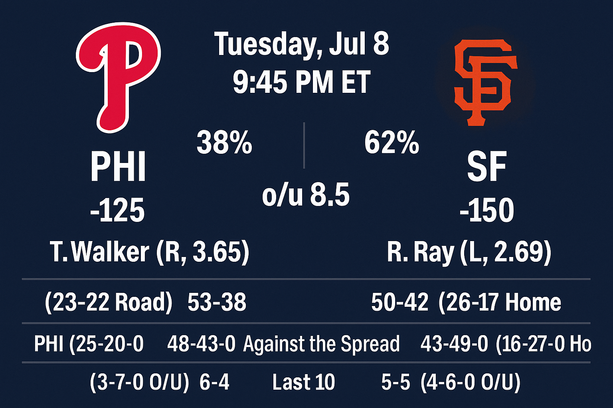
We are heading to Oracle Park tonight where the San Francisco Giants host the Phillies in a matchup that feels like a clear lean toward the home team. Robbie Ray has been sharp since returning, with a 2.69 ERA and a dominant strikeout-to-walk ratio. His numbers at home have been even better, limiting opponents to a sub-.200 batting average.
Taijuan Walker takes the mound for Philly with a respectable 3.65 ERA, but he’s been inconsistent on the road and has struggled at times to keep the ball in the yard. The Giants lineup is far from elite, but they’ve been trending up, especially against right-handed pitching at home.
The market opened with the Giants as moderate favorites and quickly ticked toward -150. This is a sign of smart action aligning with the better pitcher and stronger recent form. San Francisco has been solid at home all season, posting a 26–17 record at Oracle, while Philly comes in just 23–22 on the road.
There is also a bullpen advantage here. The Giants’ relief corps has been stingy in the second half, ranking top 5 in ERA since June 1. If Ray can get through six clean innings, San Francisco is well equipped to close the door late.
We are locking in Giants Moneyline -150 as today’s official pick.
Posted: 2:01 PM – July 7, 2025
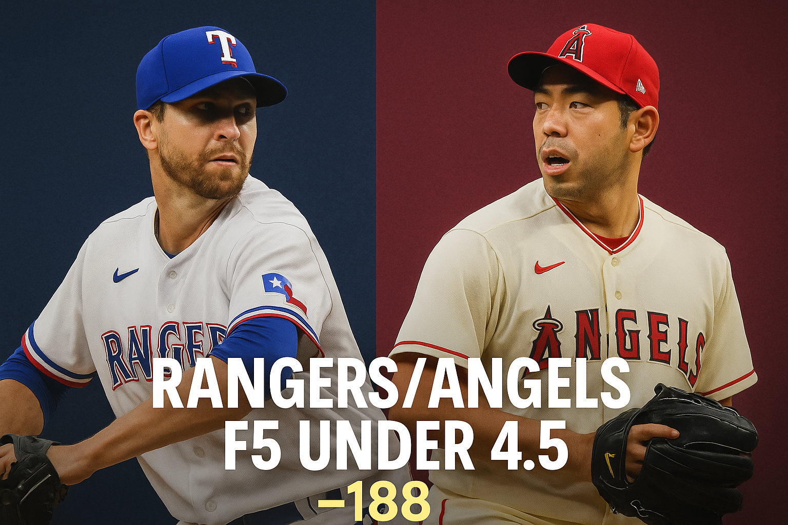
We’re heading to Anaheim tonight for a pretty clear-cut First 5 under spot between the Rangers and the Angels. Jacob deGrom is back to looking like himself again with a 2.13 ERA and a WHIP under one across over one hundred innings. He’s giving up fewer walks than ever and hitters just aren’t making solid contact off him early in games.
Across from him is Yusei Kikuchi, who’s having a sneaky good year. His ERA sits just under three and he’s been especially effective in Anaheim. Opponents are batting under .230 against him at home and he’s kept his pitch count down early, which helps him avoid the kind of traffic that leads to early scoring.
Both teams are hitting under .240 in the first five innings over their last ten games. Neither offense has been clicking early and both managers have leaned on their starters to get through at least five before calling on the bullpen. The Angels in particular have been playing in a lot of low-scoring first halves lately, and facing deGrom isn’t going to make that trend change.
This total opened low for a reason. It’s a matchup between two aces in a pitcher-friendly park, with no major wind or weather factors pushing things higher. Books hung 4.5 and slapped a -188 price on it because they know this is where the value lies. We’re eating the juice and rolling with the under for the first five.
Today’s free pick is Rangers and Angels First 5 Innings Under 4.5 at -188.
If you want the full card, email us at betlegend2025@gmail.com or subscribe to the newsletter on the homepage. We’re offering a one-week free subscription starting today.
Posted: 9:59 AM – July 6, 2025

We are back at Coors Field today where the Rockies and White Sox wrap up their weekend series. The total is set at 11, and we like the over in this spot. There are a few things working in our favor.
Chase Dollander gets the start for Colorado. His ERA at home sits at a bloated 8.87 and opponents are hitting over .300 against him at Coors. He’s walked 29 batters in just 65 innings and is allowing more than two home runs per nine innings. That’s the profile of a guy who could get blown up again in this park.
Shane Smith starts for the White Sox and while his ERA is a respectable 3.87, his xERA is north of 4.40 and he’s not a dominant strikeout guy. The Rockies actually have better numbers at home than on the road and could string together some hits against a contact-based pitcher.
This game is being played in the afternoon in one of the most hitter-friendly environments in baseball. The ball carries well in the thin Denver air and both teams are coming off back-to-back double-digit scoring games in this series. Coors Field overs are always in play, and this one has the right mix of arms, elevation, and trends.
We’re taking Rockies and White Sox Over 11 at -110.
Posted: 2:16 AM – July 6, 2025
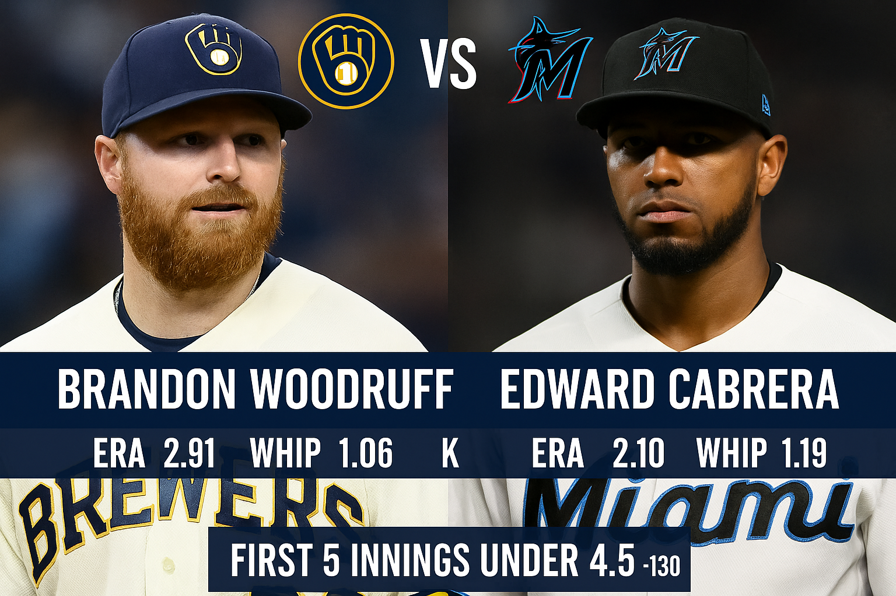
Brandon Woodruff is finally back to form and it is showing in a big way. He has allowed just four earned runs over his last seventeen and two-thirds innings while racking up twenty-one strikeouts and walking only three. His command looks sharp and his velocity has held steady through five starts.
On the other side, Edward Cabrera is throwing the ball as well as he has all season. In his last five starts, he has a 2.10 ERA, and he just held the Twins to seven scoreless innings with six strikeouts. His stuff can be electric when he is in rhythm, and right now, he is in rhythm.
The Brewers lineup has been struggling mightily against right-handed pitching. Over the past two weeks, they are hitting just .220 against righties with one of the lowest first five scoring averages in baseball. Miami's offense has been hot overall but still ranks near the bottom in early run production and gets a tough matchup today.
loanDepot Park is one of the more pitcher-friendly environments in the league and this game features two starters who both profile well in that setting. With both bullpens performing well lately, there is no urgency for managers to pull the starters early.
We are keeping it simple with this one. Two strong arms, two inconsistent early offenses, and a low total that still holds value.
The pick is Brewers and Marlins First 5 Innings Under 4.5 at -130.
Posted: 1:10 AM – July 6, 2025
One of the most underrated weapons in the MLB betting arsenal is the First 5 innings market. It is not just some alternative play for the sharp guys in Discord servers. It is a real, data-backed way to cut out the noise and take control of your edge.
Why does it work? Simple. Because full game bets often rely on something you cannot always trust. The bullpen. Even elite teams cough up leads late. Even top-tier closers implode. You could be on the right side for six solid innings, only to watch some 27-year-old middle reliever walk three batters and ruin your night.
That is why I lean on the First 5 when I know the starters are going to show up. If both pitchers have been shoving in their last few outings, and both offenses are cold or streaky, that is usually a great time to fire on the First 5 Under. You are isolating the cleanest part of the game. The part that actually makes sense statistically. You are not leaving it up to random chaos in the eighth or ninth inning.
It is not just about unders either. If you have got a legit ace facing a shaky back-end arm, and you want to avoid a late-inning sweat, the First 5 moneyline or -0.5 can be the cleaner play. Especially if the bullpen behind that ace has been taxed the last few days or simply cannot hold water.
Think of it like this. First 5 inning bets let you cut the fat off the game. You are betting on what is predictable. The starting pitchers, the early-game flow, and the core lineups. Not pinch-hitters. Not random lefty relievers. Not closers throwing back-to-backs. Just real baseball, the way it was meant to be bet.
It is not a miracle strategy. You still need to do your homework. But if you have been getting burned by bullpens or watching good picks fall apart late, this might be the smartest shift you make all season.
Posted: 5:14 PM – July 5, 2025
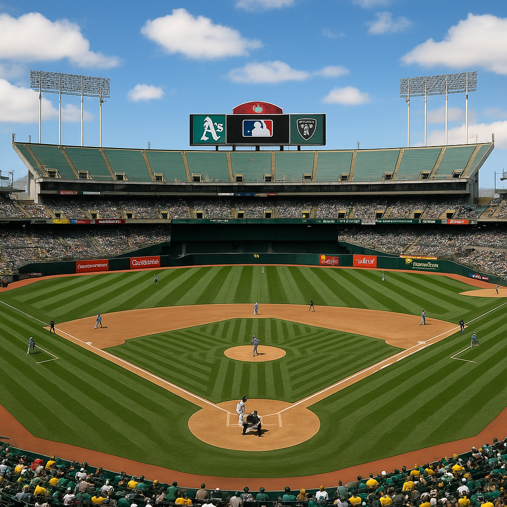
We’re heading to Oakland for a classic fade-Severino spot. The A’s are running out a starter who’s been torched at home this season, while the Giants counter with one of the most reliable arms in baseball, Logan Webb.
Webb brings a 2.61 ERA and a ground ball rate near 60% into this one. He’s been money early in games, holding opponents to a sub-.200 average the first time through the order. The guy just doesn’t give up many big innings, and he thrives in pitcher-friendly environments like Oakland Coliseum.
Meanwhile, Luis Severino has posted an ERA near 7.00 at home and has looked completely lost in recent starts. His control is off, he’s giving up hard contact early, and he’s not missing many bats. That’s a recipe for trouble against a disciplined Giants lineup that can capitalize early.
This is exactly the type of game where you want to isolate the first five innings. Forget the bullpens, forget the full game. Just back the better pitcher in the better spot and ride with it.
Today’s Pick: Giants First 5 Innings ML -200
Posted: 12:01 PM – July 5, 2025
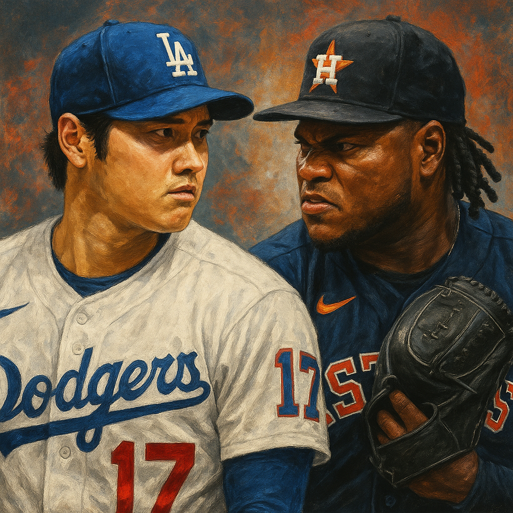
When you see Shohei Ohtani take the mound for the Dodgers, the first instinct is usually to think dominance. But this year, he’s been even better early in games. In Ohtani’s last five starts, he’s allowed just two total earned runs through the first five innings combined. His fastball command is sharp, the slider is biting, and he’s holding opponents to a .188 average the first time through the order.
On the other side, Framber Valdez is starting to regain his old form for Houston. He’s gone at least five innings in six straight starts, posting a 1.93 ERA over that stretch with a ground ball rate above 57 percent. When Valdez is keeping the ball down, the results speak for themselves. Left-handed batters are hitting under .160 against him this season, and he’s keeping the ball in the park.
Offensively, both teams have been sluggish out of the gate. Over the past 10 games, the Dodgers are averaging just 1.6 runs in the first five innings. Houston has been even worse, with just 1.3 runs per first five during the same stretch. Add in two above-average bullpens waiting in the wings, and the pressure stays on both starters to keep it clean early.
The weather in Los Angeles tonight should be neutral for run scoring, with temps in the mid 70s and no significant wind. That helps this under even more, given neither lineup is mashing right now and both pitchers excel at limiting early threats.
The pick is Dodgers and Astros First 5 Innings Under 4.5 at -125.
Posted: 7:57 AM – July 5, 2025
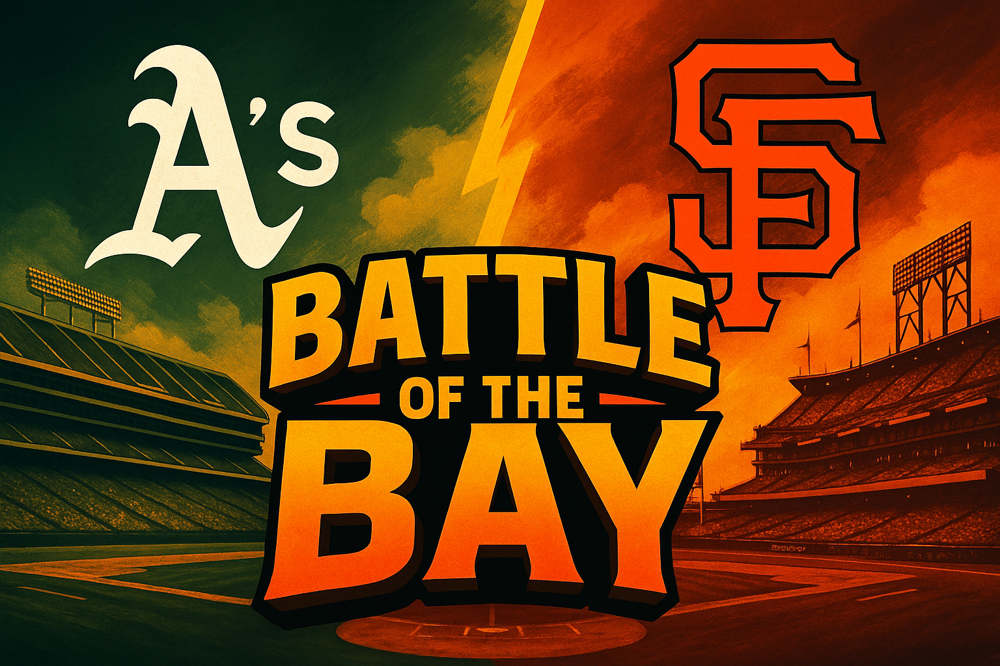
Webb enters this game with a 3.09 ERA and a WHIP under 1.20, and he's gone at least six innings in seven straight starts. The Giants are 10–2 in Webb’s last 12 starts following a team loss, which fits this bounce-back spot perfectly. Oakland ranks near the bottom of the league in batting average and runs scored, and has the second-worst run differential in baseball. Webb’s pinpoint command and ground-ball profile should match up well against an aggressive A’s lineup that doesn't walk much.
• Cubs Team Total Over 4.5 Against Cardinals – July 4, 2025
Posted: 07:02 AM – July 4, 2025
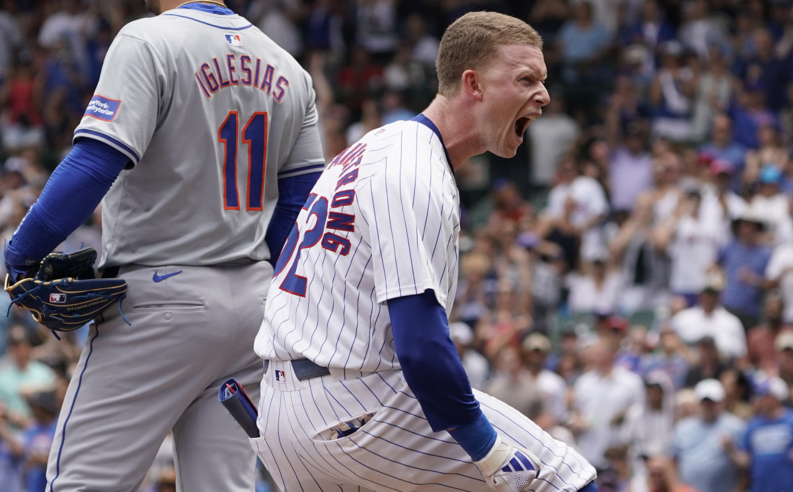
There is nothing quite like a summer afternoon at Wrigley Field. The wind is blowing out toward the bleachers and the ivy feels ready to be torn down. Colin Rea has been solid this season despite a 4.37 earned run average and he knows how to rally when the heat is on. Opposing starter Miles Mikolas has shown cracks in his breaking ball this year and that sets up perfectly for a Cubs lineup that averages over five runs per game.
Chicago’s bats have been humming all month and feel extra dangerous in hitter-friendly conditions. With the way the wind is blowing and a Cardinal pitching staff that ranks in the bottom half of the league in first-inning scoring, getting five runs from the Cubs feels more like a floor than a ceiling.
Final pick Cubs team total over 4.5 at -140
Orioles Braves First 5 Innings Under 5.5 -180
Posted: 12:47 AM – July 04, 2025
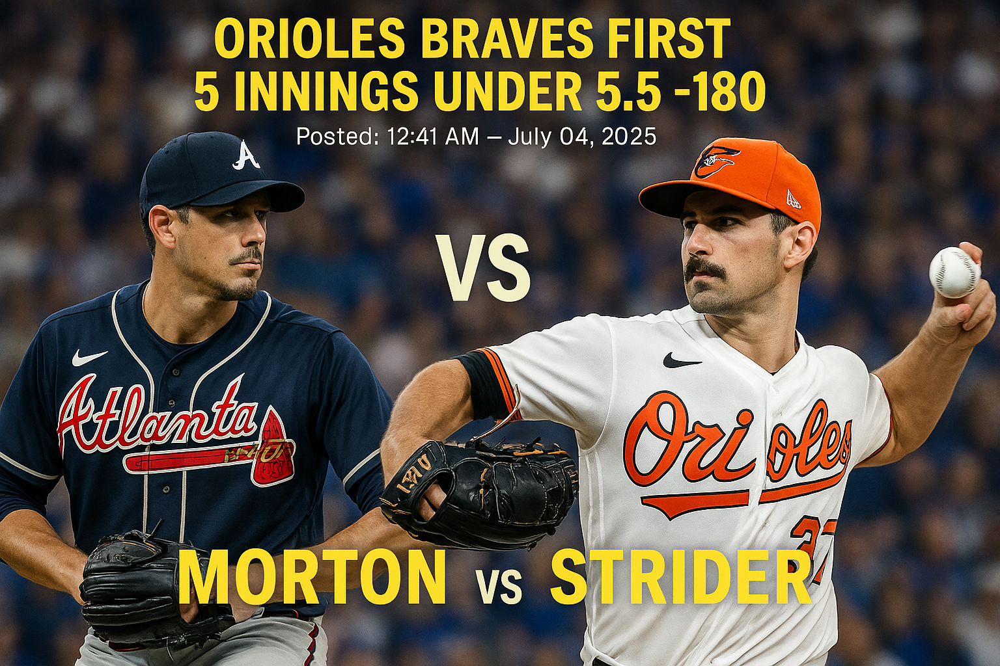
This game has all the makings of a quiet first half. Charlie Morton and Spencer Strider both have been throwing the ball well and the styles of these teams could lead to a slower pace out of the gate. Morton’s curveball is still fooling hitters deep into his career and Strider, when he's commanding, is one of the toughest guys in baseball to square up.
The Orioles lineup can be dangerous, but they tend to be more aggressive early, which might actually play into Morton's hands if he’s locating. On the flip side, the Braves have had some strikeout-heavy stretches and they’re running into a guy in Strider who gets a ton of whiffs.
Both bullpens have had some shaky spots lately, so this isn't about the full game. It’s about the first five innings. Just let the starters take over and trust that these two guys can keep it clean early. The number is a little juicy, but there’s a reason for that. Books are protecting themselves against two pitchers with real swing-and-miss stuff and good early-inning numbers.
Final pick: Orioles Braves first 5 innings under 5.5 at -180
Posted: 4.58 AM, July 3rd, 2025
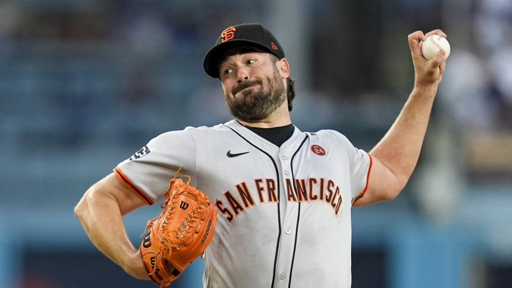
This is one of those spots where you just have to trust the arms. Robbie Ray has been quietly dominant all season, and while the Giants bats have been inconsistent, they’ve got the clear edge on the mound and in the bullpen. Ray’s been carving lately and goes into Arizona with a sub-3 ERA and a ton of confidence.
Brandon Pfaadt on the other hand has not been consistent. He’s got talent, but he leaves too much over the plate and gives up damage in bunches. And even if the Giants don’t jump him early, the Arizona bullpen has been one of the worst in baseball over the last month. Their relievers have been coughing up leads and blowing tight games. That’s not a trend you want behind your starter.
San Francisco is also in a bounce-back spot after dropping two of the first three in the series. They came up clutch late on Wednesday, and that momentum should carry over into a strong finale performance. Even with a few bats out of the lineup, the Giants are built for games like this where pitching matters most.
Giants ML -114 is the play. You're getting the better starter, better bullpen, and a team that needs to close the road trip strong.
Posted: 1:03 PM – July 2, 2025
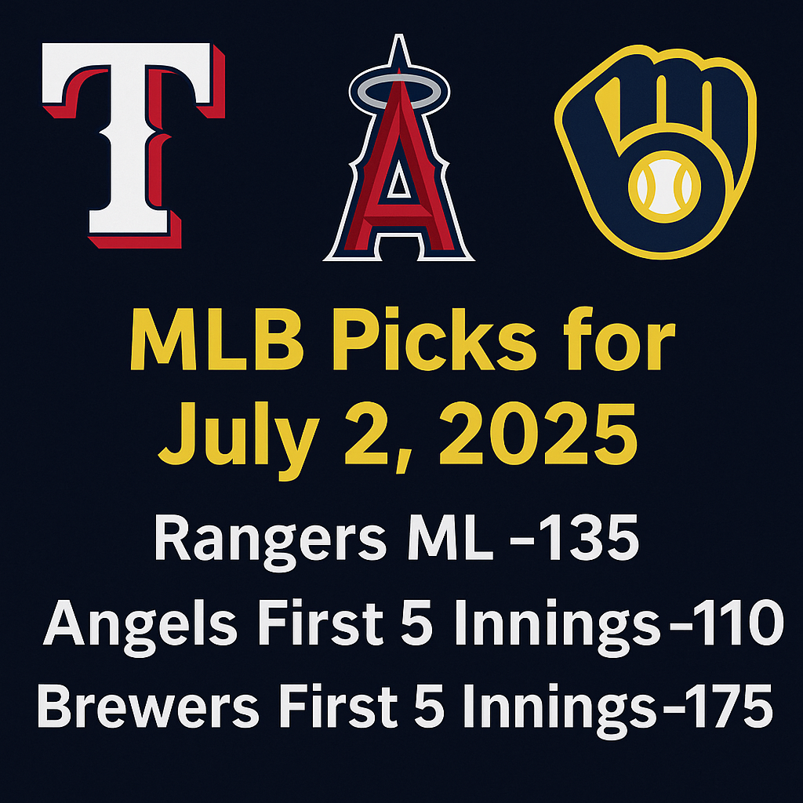
Alright, we’re back with a full trio for July 2, and I’m feeling good about this slate. Not forcing anything, just backing three spots that make sense.
First one up, Texas. We’re taking the Rangers on the moneyline at -135. They’ve been reliable at home and matchup-wise, I think they’ve got the better arm today and the steadier pen behind it. The line isn’t screaming value, but it’s fair. I trust this team to get it done when they’re in rhythm.
Next, Angels First 5 at -110. I want nothing to do with their bullpen, so this bet is like grabbing a beer and sneaking out before the party gets weird. They've got a lefty on the mound who can keep things under control, and Atlanta’s been oddly quiet in the first half of games lately. Just get through five and we’re good.
Last one’s the Brewers First 5 Innings at -175. Yeah, it’s chalky, but it’s earned. They’ve been rock solid early, and the Mets are still pretending they’re a real offense. You’ve got the stronger pitcher, the home field edge, and a New York lineup that just looks lost when it counts. Sometimes you pay a little extra for the cleanest angle.
So that’s the card. Three plays, one unit each. Current verified record sits at 43–24–2, up +11.85 units. Let’s see if we can keep stacking.
Today’s Picks:
Rangers ML -135
Angels First 5 Innings -110
Brewers First 5 Innings -175
Join the Discord to chat plays, sweats, and daily action:
https://discord.gg/NbMc3wCV
View our full verified record here:
https://www.betlegendpicks.com/betlegend-verified-records.html
Tampa Bay Rays First Five Innings -130
Posted: 2:09 a.m. June 27, 2025
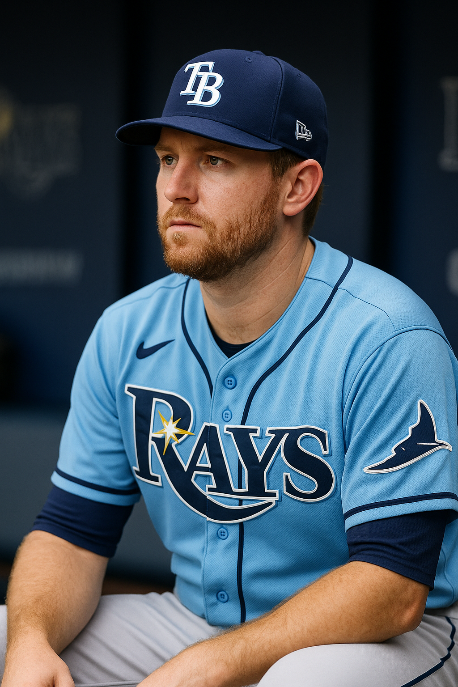
Ryan Pepiot is quietly turning into a reliable weapon early in games. He’s now gone four straight starts allowing two earned runs or fewer, with sharp command and a high whiff rate. His fastball has had late life and he’s shown the ability to pitch confidently to both sides of the plate.
Baltimore gives the ball to veteran right-hander Tomoyuki Sugano, the 35-year-old former star from Japan who’s adjusting to his first year in Major League Baseball. He’s had some bright spots but has also labored through several early innings this season. His pitch mix is deep, but his velocity sits in the upper 80s, and when he falls behind in counts, hitters have been able to jump on him.
The Rays have hit righties well in the early frames lately, averaging over two runs in the first three innings across their last five games. They’ve also shown good plate patience, drawing multiple early walks and setting up RBI chances with runners on. That kind of approach gives them an edge against a veteran like Sugano who relies more on finesse than power.
With Pepiot dialed in and Tampa’s hitters locked in early, this sets up well for another first five cash. Baltimore has had trouble scoring early in road games, and the Rays’ bullpen issues don’t even come into play here. We’re targeting the early edge only.
Take Tampa Bay first five innings -130.
Posted: 1:04 AM – June 27, 2025
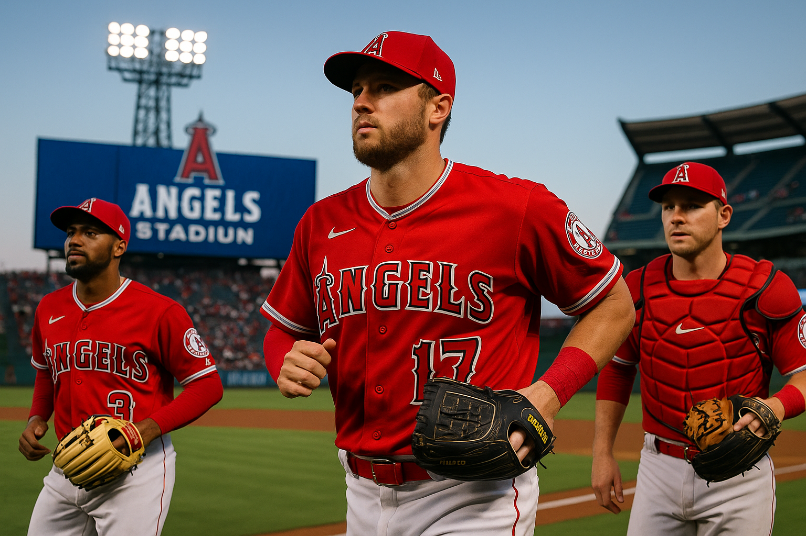
Don't look now, but the LA Angels are actually playing some good baseball. Quietly, they’ve been putting together a solid little stretch, and tonight they’re in a really favorable spot against a Washington team that’s been struggling pretty consistently over the last couple weeks.
Jake Irvin takes the ball for the Nationals and that has not gone well early in games this season. His ERA in the first five innings is over 5.00, and opponents are hitting .288 against him the first time through the order. In his last three starts, he’s given up a combined 11 earned runs in the first five frames. He’s also walked at least two batters in each of those starts, which is not what you want when facing a team that’s been seeing the ball well.
On the flip side, José Soriano has been dealing. Over his last three outings, he’s allowed just three total earned runs across 19.1 innings and struck out 21 in that span. He’s been keeping the ball on the ground, limiting damage, and staying out of trouble early. His first five ERA is sitting at 2.91, and he’s held opposing hitters to just a .212 average during that stretch.
The Angels are also 6 and 2 in their last eight first five inning bets when Soriano starts. They’ve been jumping out to early leads and holding them through the fifth, especially against teams with lower-tier starters. That lines up really well here against Irvin.
With Soriano pitching well and Irvin still looking shaky, the Angels are in a good spot to take care of business early. This is one of those matchups where shortening the game actually increases the edge. We're staying off the full game and focusing on the first five.
The official prediction for June 27 is Angels first five innings moneyline at -175.
Posted: 6:16 PM June 26, 2025
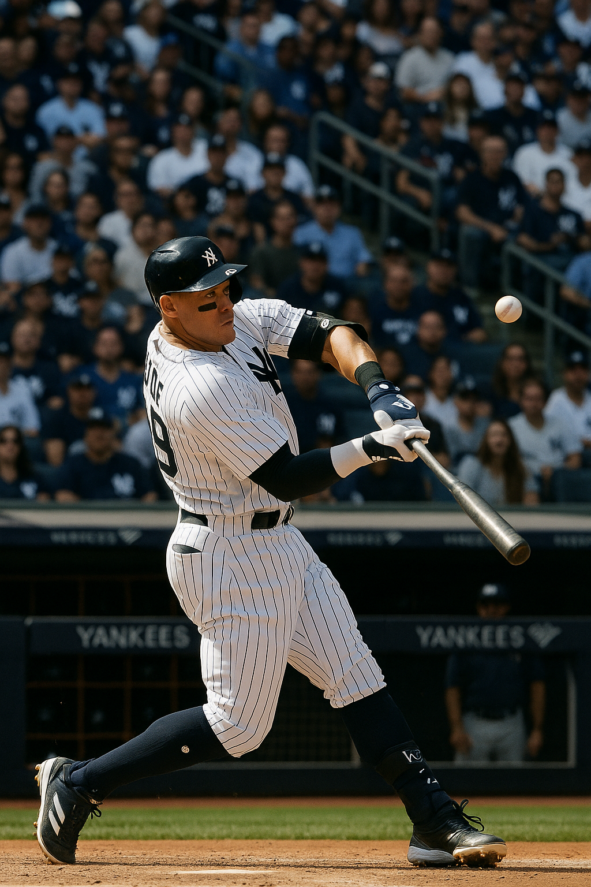
Today’s MLB Pick of the Day highlights the Yankees taking the Moneyline at -201 over the Oakland A’s on June 27. Clarke Schmidt toes the rubber for New York, and this matchup stacks up in the Yankees’ favor.
Schmidt is having a breakout 2025 season with a 2.84 ERA and 65 strikeouts over 69.2 innings. He’s been dominant at Yankee Stadium, posting a 2.30 ERA and 33 punchouts in 43 home innings. In his last start on June 21, he struck out five over seven no-hit innings and extended his scoreless streak to a whopping 25.1 innings.
On the other side, Oakland turns to Mitch Spencer, who has a 3.84 ERA, 50 strikeouts, and a 1.30 WHIP through 58.2 innings. He’s been solid but lacks the consistency to shut down a potent Yankees offense on their home turf.
The Yankees are firing on all cylinders. In a June 11 win over Kansas City, Schmidt earned the win, Judge hit his 25th home run of the year, and New York clinched the series with a 6–3 victory. Schmidt went six shutout innings with seven strikeouts.
New York’s lineup is crushing right-handers, and with Schmidt at the helm, they’re poised to dominate the A’s starter. If Schmidt holds serve, this one swings firmly in the Yankees’ favor.
Final pick: Yankees Moneyline -201
Posted: 1:07 PM – June 26, 2025
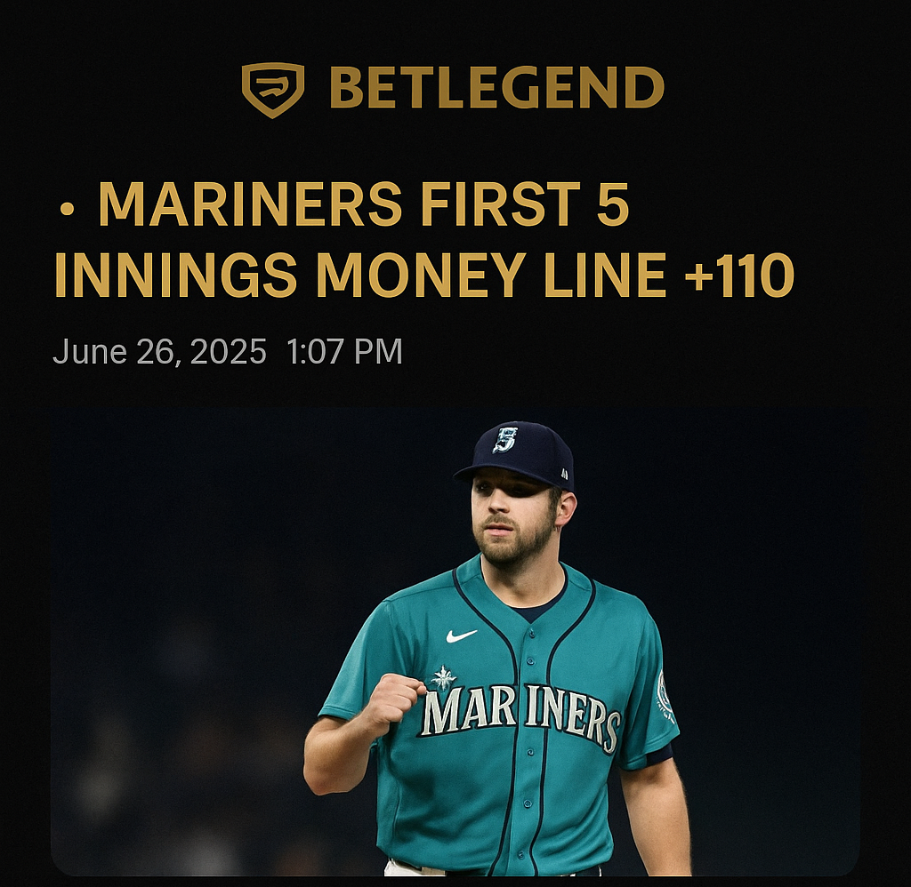
Emerson Hancock gets the start for Seattle today and while his season stats might not jump off the page, there is more to his game than the ERA suggests. He’s kept opponents to three earned runs or fewer in ten of his thirteen starts and when he’s ahead in the count, he tends to pitch with confidence. His last outing showed that kind of rhythm. Seven innings, only two hits allowed, one walk, and four strikeouts. He looked calm and efficient. That is exactly the type of start you want when betting on a first five money line.
The matchup also works in Seattle’s favor. Simeon Woods Richardson is on the hill for the Twins and he has not been fooling many hitters lately. His ERA is north of five and his WHIP has crept up with each start. More importantly, he has failed to clear his strikeout prop in six consecutive appearances. That tells you hitters are seeing him well and making a lot of contact. When teams are putting the ball in play early, it opens the door for timely scoring. And that’s something the Mariners can take advantage of, especially since they’ve already seen him once this season.
Seattle’s offense is nothing flashy, but they have been scrappy in the early innings. They’ve posted runs in the first three innings in four of their last six games and are getting more competitive at-bats from guys like Cal Raleigh and Josh Rojas. This is a lineup that works counts, takes walks, and can manufacture runs even without the long ball. That kind of approach plays well against a pitcher who doesn’t miss bats and tends to fall behind.
Another small edge worth noting is the bullpen behind Hancock. While the Mariners pen has struggled late in games, their starters have gone deeper recently which has reduced the early call to relievers. Betting the full game money line introduces some risk with that pen. That’s why isolating the first five innings makes more sense here. Hancock gives you a better chance to come out ahead before any bullpen chaos starts up.
At plus money, this is a value play based on recent form, matchup history, and early inning trends. Hancock is not overpowering, but he knows how to compete. And that can be enough against a contact-heavy Twins lineup that has cooled off lately. Seattle has the edge early in this one and the first five money line offers the cleanest path to capitalize on it.
Posted: 01:00 AM – June 26, 2025
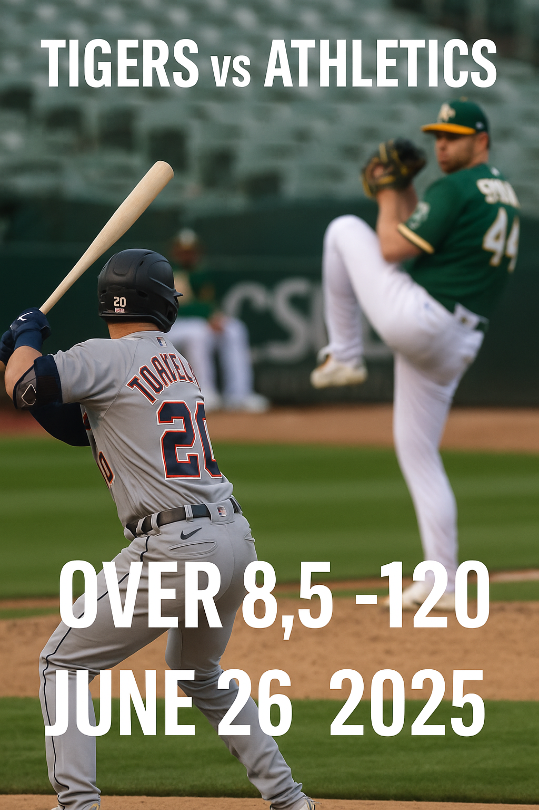
We are going to the Coliseum for what looks like a very playable over between the Tigers and the A's. The line is set at 8.5 with a price of -120. We believe this number is a little light given recent trends and current pitching matchups.
Detroit has gone over the total in nine of their last ten games. Their offense has picked up significantly, showing consistent run production from both the top and bottom of the lineup. The Tigers are now 44 and 33 to the over for the season, which places them among the league’s most reliable over teams.
Oakland enters with a 41 and 35 record on the over. That success is largely due to a pitching staff that continues to struggle. The Athletics are allowing nearly six runs per game, and their bullpen remains one of the least effective in Major League Baseball. They often allow games to spiral out of control in the late innings.
Springs takes the mound for Oakland. He has not been able to find consistency, and his metrics show an inflated ERA with concerning peripherals. His walk rate is high, and he is giving up hard contact at a dangerous clip. Detroit should have multiple opportunities to score early.
The Tigers will start N, who has been up and down this season. His strikeout rate is modest and he tends to leave pitches in the zone. Against even an average Oakland lineup, that can lead to trouble. Detroit's bullpen is also vulnerable and has not held many leads cleanly, which could help push this game over the number late.
Given the poor state of both pitching staffs and the fact that both teams have been trending over all season, we are targeting this total. Warm West Coast weather and late-game scoring upside make this an attractive play.
Tigers and A's Over 8.5 -120 is the pick for June 26, 2025.
Posted: 2:42 AM June 25 2025
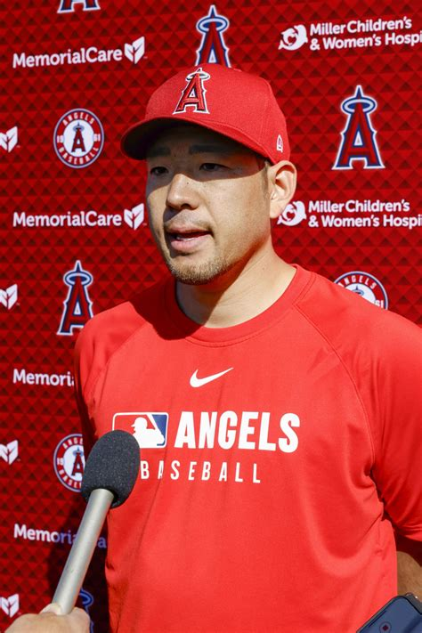
Yusei Kikuchi gets the ball today for the Angels, and there's a lot to like about this spot. He’s wearing number 16, coming in from the left side, and putting together a pretty sharp season so far , 3.01 ERA, 1.43 WHIP, and 87 strikeouts in just under 90 innings. Sure, the first-inning ERA is a little high at 6.19, but he hasn’t let games get away from him early. He’s held his own against both righties and lefties, especially at home.
When you zoom in on just the first five innings, the Angels have been sneakily decent. They’re 14–14–7 in those spots and up about 60 units if you’ve been backing them just for that early window. The offense isn’t explosive, but they’ve been respectable at home , .229 average, .301 on-base, .384 slugging. Not eye-popping, but enough to put pressure on a shaky starter like Richard Fitts.
Speaking of Fitts , he’s got a 4.71 ERA and 1.29 WHIP and hasn’t pitched since June 2. Why? Because that start was a meltdown. Six runs in the first inning against these same Angels at Fenway, including three bombs. Not exactly the kind of performance that earns you another quick turn in the rotation. Now he’s back on the road, in a tougher environment, against a lineup that already roughed him up once.
This isn’t a bet on the Angels being great. It’s a bet on Fitts not being ready and Kikuchi being solid enough to keep things steady for five innings. The number’s sitting at -140, which feels fair for what you’re getting here , a reliable lefty at home against a green starter making his first appearance in weeks.
No play is guaranteed, but when you line up the recent trends, the home-road splits, and the matchup history, this one stands out. It’s a controlled environment, and you’re just asking the Angels to be ahead after five.
The second official pick for June 25 is Angels first five innings at -140.
Posted: 11:14 AM June 24, 2025
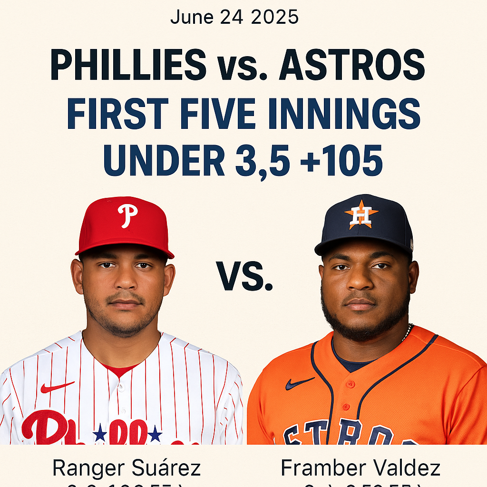
We're looking at a sneaky sharp spot on Tuesday as two of the best left-handers in baseball square off. Framber Valdez takes the mound for Houston with a 3.53 ERA and a groundball rate near 56%, one of the best in the majors. His sinker-cutter combo neutralizes power bats and keeps the ball in the park, especially early when he's fresh.
Across from him, Ranger Suarez has been flat-out elite this season. He enters with a 1.36 ERA, a WHIP under 1.00, and has allowed just one earned run in the first five innings of his last six starts combined. His command has been razor-sharp, and opponents are slugging under .290 against him this year. The Phillies have also cashed the first five under in five of Suarez’s last seven outings.
Neither team has been explosive early against lefties lately. Houston is hitting just .216 with a .613 OPS in the first five innings against southpaws this month, while Philly ranks 21st in first five scoring and has a tendency to start slow on the road. Both offenses lean right-handed, but that plays right into each starter’s strength.
Minute Maid Park is also a slight pitcher’s park when the roof is closed, and with no wind factor or elevation boost, this feels like a tight, efficient duel between two pitchers who work quickly and generate soft contact.
We don’t need a scoreless game. Just five innings with three or fewer total runs. And with the way these two are throwing, that’s very live at plus money.
The pick is Phillies and Astros First 5 Innings Under 3.5 (+105)
Suarez’s underlying metrics tell the same story the surface stats do. He owns a 2.75 xERA and has allowed just a 27.2% hard-hit rate which is one of the lowest in the league. His changeup has become a true weapon, inducing a 39% whiff rate, and he’s now getting swings and misses from both lefties and righties. He’s also remarkably consistent. Suarez hasn’t allowed more than 2 runs in a start since May 7, a span of seven straight outings.
Framber Valdez, meanwhile, has shown signs of returning to form. He just held the White Sox to one run through seven innings and has gone at least six innings in five of his last six starts. His cutter usage is back up, and when he throws it more than 20% of the time, opponents are hitting just .182 off him. He still generates ground balls at an elite clip and limits barrels, giving him a very safe profile in first five under spots.
Looking at umpire data, Ryan Blakney is scheduled behind the plate and he leans slightly under. Games he's called have gone under in 55% of starts over the last two seasons. His zone is pitcher-friendly, especially to low and inside cutters and changeups, the exact mix these lefties feature.
Neither team has a strong history the first time through the order in these matchups. Houston’s top bats like Alex Bregman and Jeremy Peña have a combined .212 average against lefties in June. Bryce Harper and Kyle Schwarber, while dangerous, actually have below-average OPS figures against lefties in 2025, and both struggle to barrel up sinkers and cutters.
This feels like one of those games where both pitchers cruise through the first three or four innings, maybe allowing a scattered hit or two, but no big rallies. Neither lineup has been great at capitalizing early, and both managers will likely be fine letting their aces pitch deep. Expect a quiet first five frames and a very live under at plus money.
Posted: 2:20 AM June 24, 2025
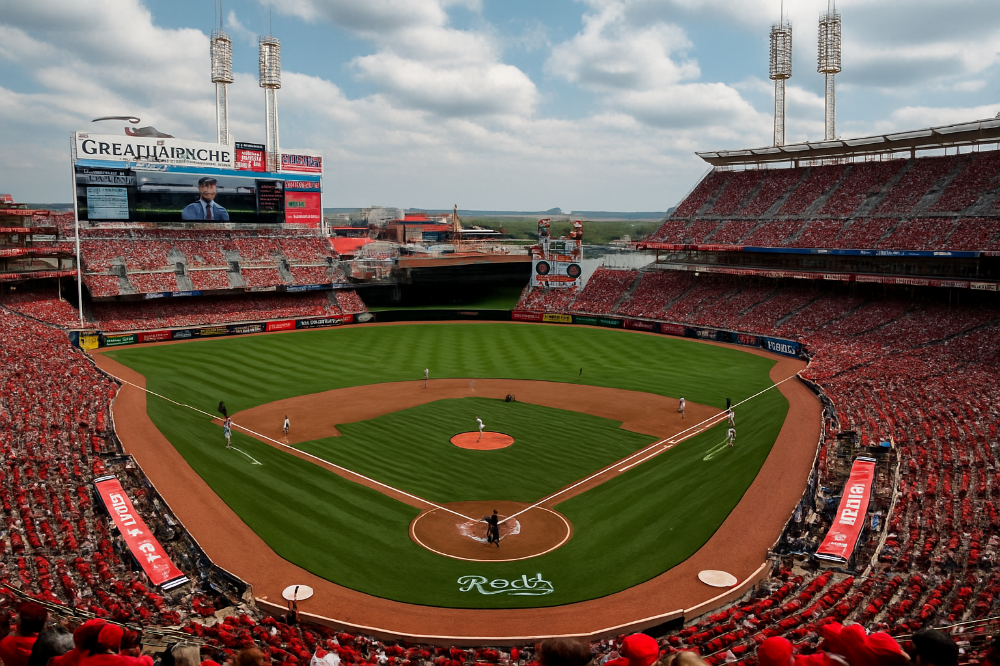
Carlos Rodon has quietly put together a stretch of strong outings for New York, and he’ll take the mound Tuesday night against a Reds team that ranks bottom 5 in OPS against left-handed pitching.
The Yankees, meanwhile, have one of the best road records in baseball and have been especially consistent at putting up early runs against subpar right-handers.
Nick Martinez is expected to get the start for Cincinnati, and while he’s done some decent work in long relief, his track record as a starter is rocky.
He’s allowing a .294 average to left-handed batters, and that’s bad news against a Yankees lineup that includes Anthony Rizzo, Juan Soto, and a red-hot Giancarlo Stanton.
The Yankees have won 11 of 14 when Rodon starts as a road favorite, and they’ve covered the run line in 9 of those.
Martinez has an xERA over 5.00 in games where he’s pitched more than three innings, and Cincinnati’s bullpen has the second-worst WHIP in the NL over the last 30 days.
New York is simply in another class, and with their power bats in a hitter-friendly ballpark, they have the edge in every category Tuesday.
Final pick: Yankees -153
• MLB Pick of the Day: Giants Moneyline -170 vs Marlins June 24, 2025
Posted: 12:03 AM June 24, 2025
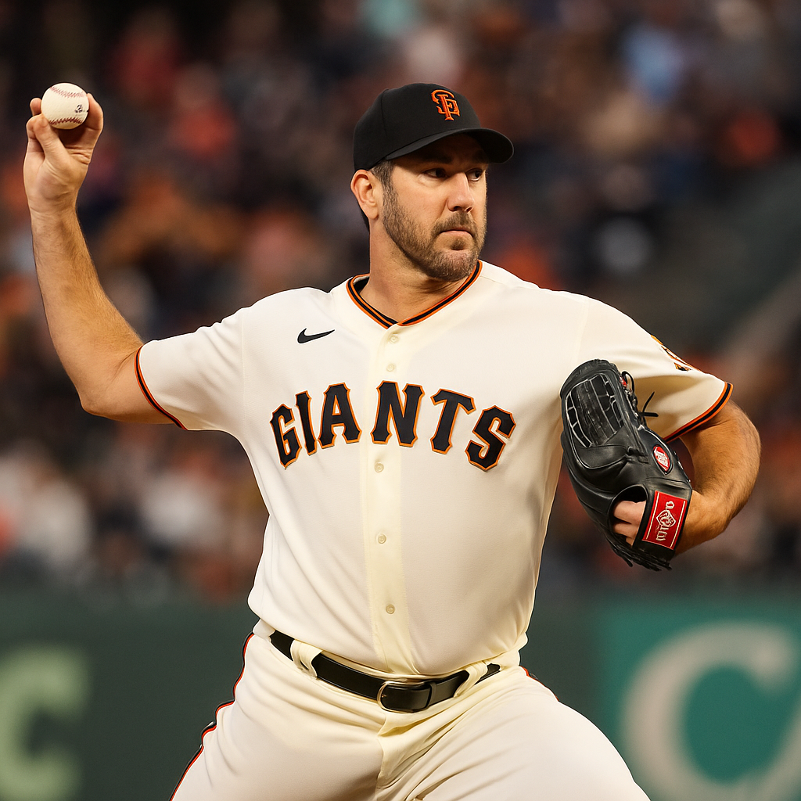
Justin Verlander gets the ball for the Giants on Tuesday night at Oracle Park against the Miami Marlins. The veteran right-hander enters with a 4.45 ERA, 1.43 WHIP, and 47 strikeouts in 56.2 innings pitched this season. He’s coming off a 4.2-inning outing with six strikeouts and just one walk after returning from paternity leave. In two home starts this year, he’s allowed only one earned run.
Cal Quantrill takes the hill for Miami, sporting a 5.68 ERA and 1.47 WHIP over 63 innings. He’s struggled with command and has allowed plenty of traffic on the bases. San Francisco faced him earlier this season and fared well.
The Giants and Marlins have met three times this year, with San Francisco leading the season series 2–1. They won 2–0 and 4–2 on May 30 and June 1, while dropping a 1–0 game on May 31.
At home, the Giants are 22–14. They’ve played better at Oracle Park and are looking to gain ground in the tough NL West. Verlander’s strong home outings, combined with the Giants’ bullpen edge and Quantrill’s inconsistency, point toward value even at the -170 number.
Final pick: Giants Moneyline -170 vs Marlins
Posted: 6:08 PM June 23, 2025
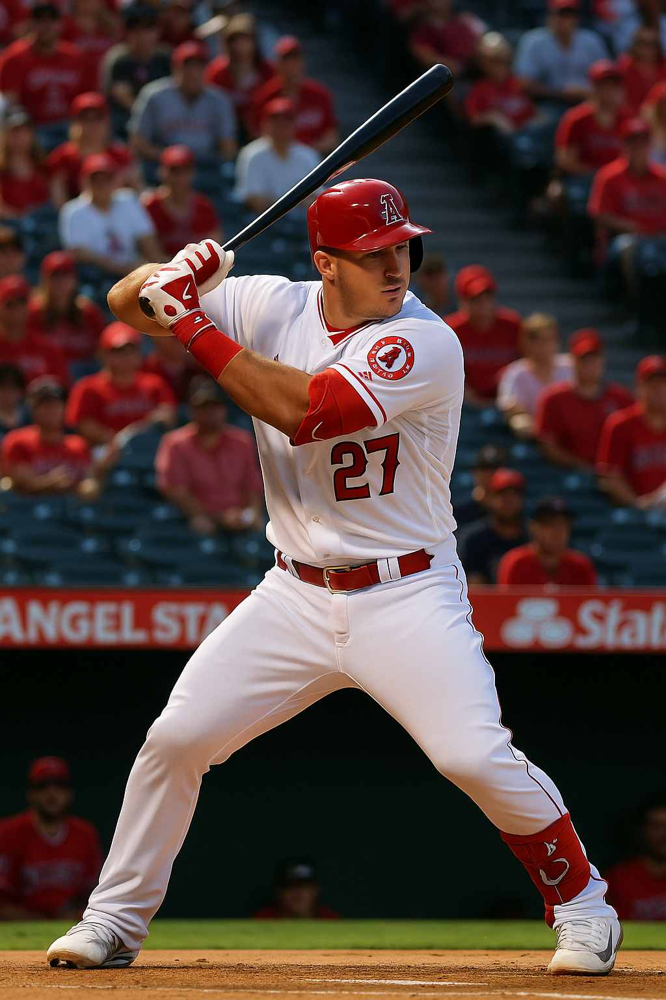
We are rolling into June 23rd with a nice underdog play that’s got some real meat on the bone. The Los Angeles Angels, sitting at even money, are hosting the Boston Red Sox tonight, and we’re grabbing the home side at plus 100.
Let’s start with the pitching matchup. Boston is sending Walker Buehler to the mound, which will draw some name value and attention. But this is not the same Buehler we remember from his Dodgers prime. He’s still working his way back after surgery, and his recent outings have been shaky. Over his last three starts, he’s given up a combined 11 earned runs in just 14 innings. The velocity is down a tick, and his fastball is getting hit hard, especially by lefties.
On the flip side, the Angels are countering with Jack Kochanowicz. He’s not a household name, but he’s flashed legit stuff in his last few starts. The 6'6" righty has a heavy sinker and a surprisingly effective changeup, and Boston has struggled this year against unfamiliar arms. Don’t underestimate a young pitcher with nothing to lose and decent command. He just went six strong innings against Houston, walking none and striking out seven.
The Angels' bullpen quietly ranks top 10 in ERA since June 1st. Their relievers have actually been better than Boston’s, who still can’t find a reliable bridge to Kenley Jansen. Combine that with home-field advantage and a fully healthy Angels lineup featuring Taylor Ward, Logan O’Hoppe, and a hot Mickey Moniak, and you’ve got a very live underdog spot.
Boston has lost five of their last six road games. They’ve also hit just .211 as a team over the last week. Their offense tends to vanish outside of Fenway, and this feels like one of those sleepy Monday night spots where they don’t bring the energy.
The market has this as a coin flip. We think the Angels should be small favorites. When you get plus money on a motivated home team with a bullpen edge and a live young starter, that’s a bet we make every time.
The pick is Angels Moneyline +100
Posted: 11:01 AM June 23, 2025
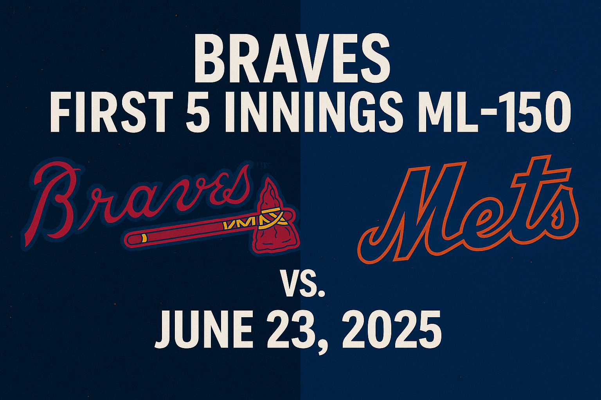
We’re heading straight to the early innings tonight in New York where the Braves take on the Mets in the opener of this series. Atlanta has the better pitcher, the hotter lineup, and all the first five momentum we look for in a sharp MLB spot.
Spencer Schwellenbach has earned our trust with a 3.26 ERA and 92 strikeouts this season. He works efficiently and has shown great command early in games. In his last five starts, he’s held opposing offenses scoreless through the first three innings four times. He also keeps the ball in the park and limits walks — exactly what you want backing a first five bet.
On the other side, Paul Blackburn is just trying to survive. The right-hander has a 6.92 ERA and has yet to find any rhythm this year. His control has been shaky, his hard-hit rate is near the top of the league, and he’s had little success keeping Atlanta’s big bats quiet. Albies is 3-for-4 off him. Riley is 2-for-3. Murphy is 1-for-1. Verdugo and Acuña have both tagged him in the past.
The Braves rank top three in MLB in first five scoring and are 7–2 in first five moneyline bets over their last nine road games. The Mets, meanwhile, have been ice-cold out of the gate, posting a .204 average and just six total first-inning runs across their last ten games. You don’t want to be waiting around on this Mets offense to warm up because it often doesn’t.
Rather than leave this in the hands of bullpens, we’re keeping it simple. Atlanta has the better starter, the more dangerous lineup, and the favorable matchups across the board. Just get us through five innings with the lead. That’s all we need.
Today’s pick: Braves First 5 Innings Moneyline -150

Posted: 12:16 PM June 22, 2025
This is one of those games that just feels like it was made for betting. It is a beautiful Sunday in Los Angeles, Shohei Ohtani is on the mound, and the Dodgers are playing a Nationals team that looks like it already has one foot on the plane. If you are going to lay a price, this is the kind of spot where it actually makes sense.
Ohtani is doing Ohtani things again. He comes into today with an earned run average just under three and a strikeout per inning pace that most pitchers can only dream of. When he pitches at home, it is like flipping a switch. He gets sharper, his command tightens up, and hitters start guessing. The Dodgers have won twelve of the last fifteen games he has started and they are a ridiculous twenty six and eleven at home this season. That is not a fluke. They are built to win here and Ohtani is a big pa...
Then you have the Nationals. Offensively, they are one of the worst teams in baseball. They cannot hit for power, they struggle to string together rallies, and they rank near the bottom in just about every important stat. In the month of June, they are hitting under .230 as a team and scoring just over three runs per game. Their approach looks flat, and it is not getting better.
Mike Soroka is getting the start for Washington, and honestly, it has not been pretty. His ERA is sitting around five point seven and the advanced numbers say it should be even worse. He does not miss bats, he gives up a ton of hard contact, and lefties are feasting on him. That is a big problem when the Dodgers are rolling out guys like Ohtani, Freeman, Muncy, and Outman from the left side. These guys are not just making contact, they are doing real damage against pitchers like Soroka.
The Dodgers as a team are crushing right handed pitching lately. Their average in June against righties is close to .280 and their on base percentage is near .360. They are also top two in baseball in weighted runs created against right handers which basically means they are producing runs at an elite rate every time a righty is on the mound.
It is not just the starters either. The bullpen edge is massive. The Dodgers relievers have been lights out over the last month, ranking top three in earned run average and first in WHIP. Meanwhile, Washington's bullpen has been leaking runs all over the place. If this game is close late, Los Angeles has a huge advantage once the starters come out.
Even on defense, it is not a fair fight. The Dodgers lead the league in defensive runs saved and fielding percentage. That stuff matters. They turn more grounders into outs and they make fewer mistakes when the pressure is on. Washington is closer to the bottom in both of those areas and they have made some brutal errors lately that have cost them games.
According to our model, the fair line on this game is Los Angeles - two seventy eight. We are getting - two twenty. That is a five percent edge and it qualifies as a full one unit play. The volatility is low because the Dodgers do not walk guys, they do not kick the ball around, and their bullpen throws strikes. That makes this a safe profile for a moneyline anchor.
So what do we have here? The better starter, the hotter lineup, the better bullpen, the sharper defense, and a team that just wins at home. The price might look steep, but it is actually short when you factor in all the edges. This is what a real favorite looks like. And it is worth every penny.
The pick: Dodgers -220

Posted: 9:00–11:00 PM June 21, 2025
Date/Time:
Sunday, June 22, 2025 | 4:05 p.m. PT at Oracle Park
Probable Starters:
• San Francisco Giants: LHP Robbie Ray (8–2, 2.68 ERA, 97 K over 87.1 IP)
• Boston Red Sox: RHP Lucas Giolito (3–1, 4.73 ERA, 41 K in 45.2 IP)
Line Status:
Giants ML –150
Why Giants ML –150 Is a Smart Bet:
1. Robbie Ray has been dealing. His 2.68 ERA and 1.12 WHIP are backed by a 30.8% strikeout rate and just a 6.1% walk rate. The lefty is limiting hard contact (32.1% HC%) and has a 15.3% swinging strike rate—top 10 among qualified starters.
2. Giolito hasn’t been sharp. A 4.73 ERA is paired with a troubling 1.6 HR/9 and a barrel rate north of 10%. His xERA (5.01) and FIP (4.95) suggest he’s actually been fortunate. That’s not the kind of arm you want backing on the road in Oracle.
3. The Giants have been mashing right-handers lately. Since June 1st, they rank 5th in MLB in wRC+ vs RHP (119), with a team OPS over .770 in that span. They’re averaging 5.2 runs per game over their last 12 and have six hitters with an OPS above .750 in June.
4. Oracle Park advantage is real. The Giants are 24–14 at home this year and 14–5 over their last 19 games at Oracle. San Francisco is also 12–3 in Robbie Ray’s starts and 9–1 in his last 10 appearances overall.
5. The BetLegend model gives San Francisco a 63.7% win probability in this matchup—suggesting value even at -150. We project a strong edge in starting pitching, bullpen leverage, and overall form.
Quick Trends & Stats:
• Giants: 5th in MLB in wRC+ vs RHP since June 1 (119)
• Giants: 14–5 last 19 home games
• Giants: 12–3 in Robbie Ray starts
• Red Sox: 18–21 road record
• Red Sox: Team xFIP over 4.50 in last 10 games
The Giants are the better team—plain and simple. They’re hitting, they’re at home, and they’ve got one of their top arms on the mound in a game that would clinch the series. Boston is hanging around .500, but on the road, in a pitcher’s park, with a volatile arm like Giolito on the bump? That’s not a spot we want to back them. Our model sees clear value in the number and this is a textbook home chalk setup with real firepower behind it.
Final pick: San Francisco Giants Moneyline –150
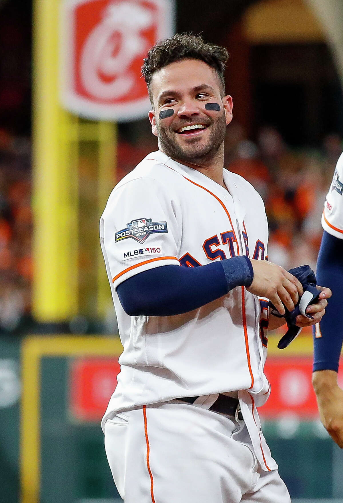
Posted: June 21, 2025 1:24 PM PT
With two capable arms, sluggish offenses, and a pitcher-friendly setup in Anaheim, this sets up well for a low-scoring first half.
Wind is expected to be blowing in from center at 8+ mph, and the umpire scheduled is Lance Barrett, who historically trends under (54% under rate over the last 3 seasons).
The Astros bats remain cold overall. Over their last 10 games, they’re averaging just 3.3 runs per game. The Angels’ lineup hasn’t been much better, still adjusting without Mike Trout, and they’ve scored 2 runs or fewer in 5 of their last 7 games.
No need to overthink this one. Both pitchers are hittable, but bullpens are bottom of the barrel, so this bet leans on arms starting fresh with the wind blowing in early.
Final pick: Astros/Angels First 5 Innings Under 4 (+100)